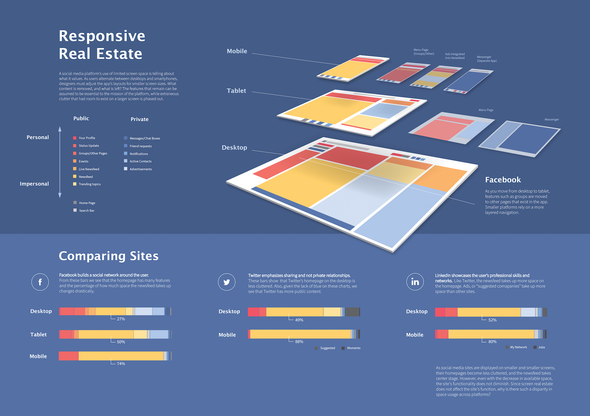
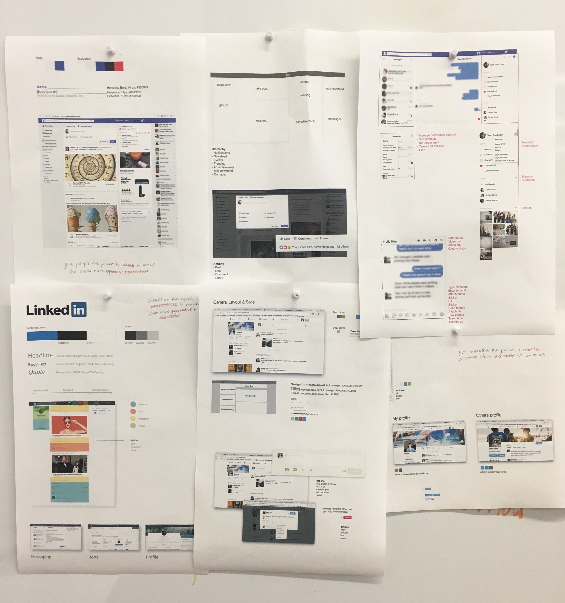
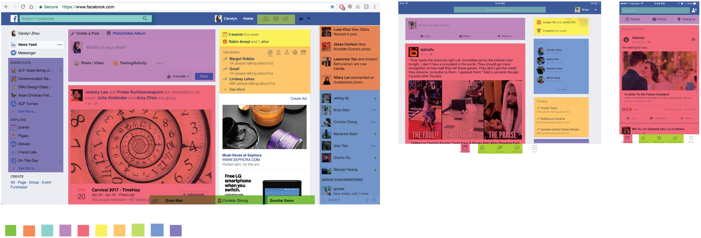
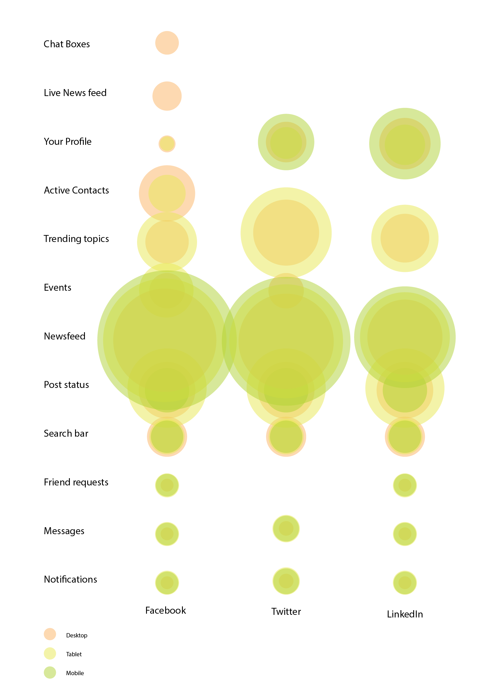
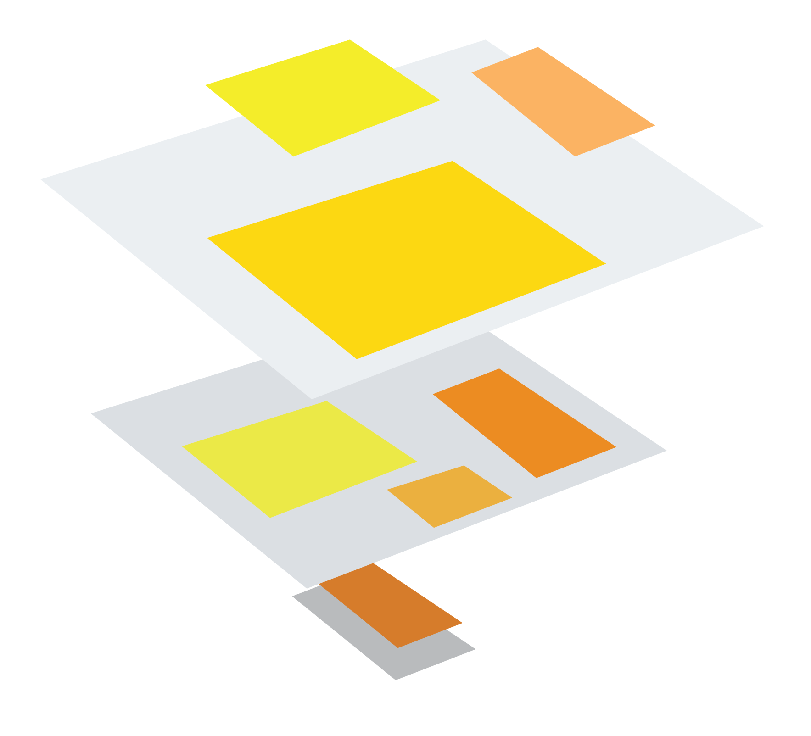
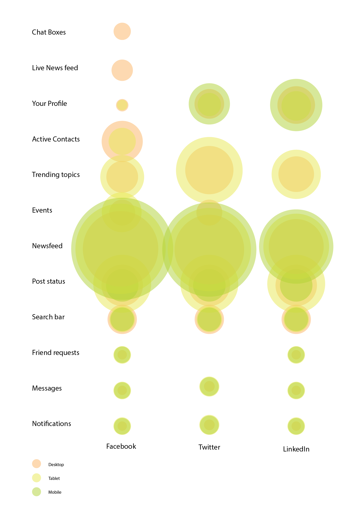
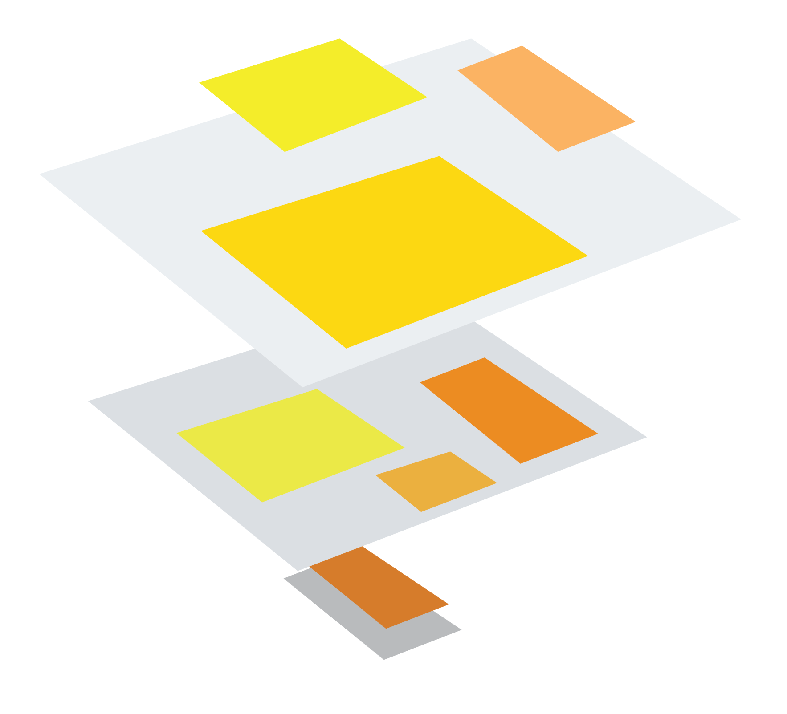
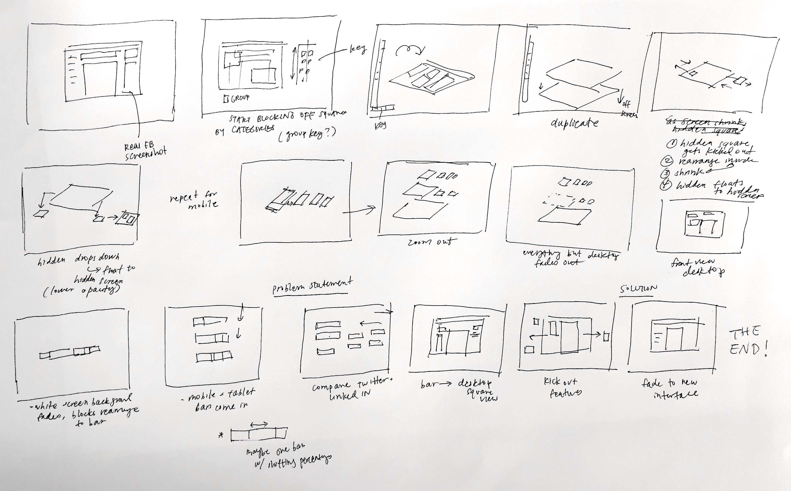

Responsive Real Estate
Challenge
Gather, analyze, and visualize data about an interesting aspect of a social media platform.
Outcome
An infographic poster and animation visualizing data on Facebook's screen real estate usage on desktop, tablet and mobile devices.
Role & Contributions
- Data collection
- Data visualization
- Print design
- Motion design
Teammates
- Natalie Harmon
- Christie Chong
Final Pieces
Poster
This poster displays our analysis of the data we collected on Facebook's screen real estate usage on different devices. We found that its tablet and mobile apps are responsive in a way that highlights the newsfeed (the large yellow sections below), but compared to its competitors, Facebook uses the smallest ratio of space for the newsfeed on their desktop site.
Video
In the second part of the project, we expanded on our findings and used the data to propose a simplistic design intervention. Our idea was to integrate more features from the desktop layout into the newsfeed or move them to other pages, similar to the mobile app, which retains the same functionality as desktop. With less visual distraction on the homepage, we predict that users could focus better on their friends' activity in the newsfeed.
Process
Data Collection
Our team began by looked at social media sites that we use more or less regularly: Facebook, Twitter, and LinkedIn. We studied their grid systems, layouts, typography, and features. We were most interested in how a site's use of screen real estate reinforces the platform's goals. We wondered whether the limitation of space on smaller devices would reveal what these companies value as essential features or functionality.
Visualizing the Data
We conducted our analysis on all 3 sites, but chose to focus on Facebook. For each site, we focused on its homepage and identified the different sections or features it displayed. We organized them into categories and compared the prominence of those features across each site's desktop and mobile screens (plus tablet for Facebook).
Below are a few of my explorations of visualization methods for communicating this data, each highlighting a different aspect of the information. In the end, we used the bar charts (showing the percentage of screen space taken by various features) because they were the clearest visualization for comparison.
 



Color Coding
From here, we solidified the category breakdowns. We tried to find ones that were common across all three platforms so we could easily compare them, but also retained features that were unique and important to each site (i.e. Networking for LinkedIn). We tried different information breakdowns such as individual vs. social, common vs. site-specific, etc.
In the end, we looked at whether features were public or private (whether or not they were shared with other people), and how personalized content is on a user's home page. Our color palette has a warm/cool dichotomy and was inspired by Facebook reaction icons. Initially I used easily distinguishable colors as we nailed down our categories, then moved towards a cleaner palette.
Poster Layout
Below is our process work for the poster's layout. We wanted to show how the number of features on screen gets reduced on tablet and on mobile, but they're moved elsewhere rather than removed from the app. The app becomes "layered" as it takes a few taps to reach things. We wrestled with visually communicating this idea, using layers to signify moving features. The poster covers our analysis of Facebook and its competitors' current layouts.
For each device, we calculated the percentage of screen space each feature took up, and compared the data across sites using the bar charts. We chose to highlight the newsfeed because it is the most prominent feature on each platform, suggesting its importance.


Video Storyboard
In the next part, we used animation to add further depth to the data in our poster. Using the same visual style, we showed how content resized and shifted to other pages on smaller devices.
To take it a step further, we mocked up a redesign of Facebook's home page with fewer features, to reduce visual clutter and give more focus to the newsfeed.
Our video explained 3 main things: the color coding, the layering, and the bar graph data.
Our intervention before and after:
Learning Outcomes
- Finding and visualizing meaningful insights in data
- Designing a cohesive visual language that holds together across different media (print & video)
- Some new technical After Effects skills